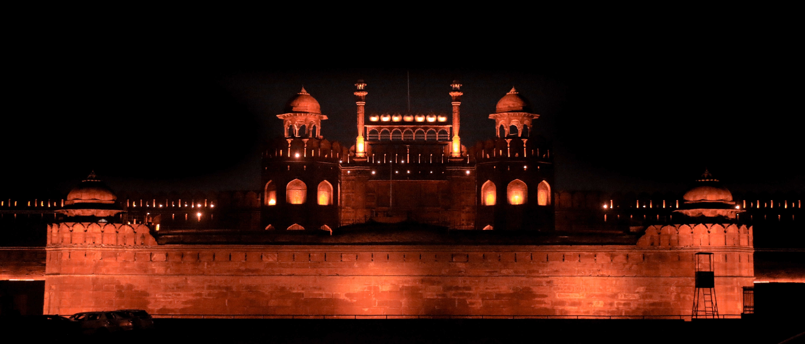

The Red Fort, also known as "Lal Qila" in Hindi, is one of the most iconic historical monuments in Delhi,
India. Located in the heart of the city, this magnificent fort stands as a symbol of India's rich history
and cultural heritage. In this essay, I will delve into the history, architecture, significance, and
cultural importance of the Red Fort in Delhi.
Historical Background:
The Red Fort was built during the reign of the Mughal Emperor Shah Jahan in the 17th century. Construction
began in 1638 and was completed in 1648. The fort was intended to serve as the main residence for the
emperor and his court and was originally known as the "Qila-e-Mubarak" or the "Blessed Fort."
Architectural Marvel:
One of the most striking features of the Red Fort is its stunning architecture. The fort is made primarily
of red sandstone, which gives it its distinctive appearance and name. It spans over 254 acres and is
surrounded by a massive defensive wall with towering bastions. The main entrance, known as the Lahore Gate,
is an exquisite example of Mughal architecture with its intricate carvings and a grand facade.
Inside the fort, there are numerous magnificent structures, courtyards, and gardens. The Diwan-i-Aam (Hall
of Public Audience) and the Diwan-i-Khas (Hall of Private Audience) are notable for their impressive design
and marble inlay work. The Rang Mahal, or "Palace of Colors," is another highlight with its beautiful
frescoes.
Cultural Significance:
The Red Fort holds immense cultural and historical significance for India. It was from the ramparts of this
fort that India's first Prime Minister, Jawaharlal Nehru, hoisted the national flag on August 15, 1947,
marking India's independence from British colonial rule. This tradition continues to this day with the
annual Independence Day celebrations held at the Red Fort.
Tourist Attraction:
Today, the Red Fort is a major tourist attraction, drawing visitors from all over the world. It has been
designated as a UNESCO World Heritage Site, recognizing its importance to world heritage. The fort complex
also houses museums that display artifacts and relics from the Mughal era, providing visitors with a deeper
understanding of India's history.
Conclusion:
In conclusion, the Red Fort in Delhi stands as a testament to India's glorious past and its struggle for
independence. Its architectural grandeur, historical importance, and cultural significance make it a jewel
in India's heritage. A visit to the Red Fort is not only a journey through time but also an opportunity to
appreciate the rich tapestry of India's history and culture. It continues to be a source of pride for the
nation and a symbol of its enduring spirit.
WIKI